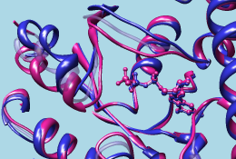

| GTP-binding switch |
|---|
| (1tagA, 1tndA, morph intermediate) |
|  |
Morph Conformations is under development (see limitations).
There are several ways to start Morph Conformations, a tool in the Structure Comparison category. It is also implemented as the command morph.
The different structures should be opened as separate models or submodels in Chimera and superimposed. The apparent motion across a morph trajectory depends on how the input structures are superimposed; matched regions will remain approximately steady. The structures can have different numbers of residues or different sequences (homologs or mutants can be compared), but currently they must contain equal numbers of chains.
The next step is to populate the Conformations list with structures; the order in the list corresponds to the order in which they will be visited in the output trajectory. The same model can be listed more than once to produce a morph trajectory that visits the same conformation more than once, for example: A → B → C → A.
Clicking Add... brings up a dialog that lists the open molecule models. Clicking a model's name and then the Add button (or double-clicking the model's name) puts it in the Conformations list. Multiple models can be chosen and added simultaneously. A block of models can be chosen by dragging, or by clicking on the first (or last) line in the desired block and then Shift-clicking on its last (or first) line. Ctrl-click toggles the state (chosen or not) of single line. After the desired conformations have been added, the model-choosing dialog can be dismissed by clicking Close.
Clicking a line in the Conformations list designates that entry as the target of subsequent button actions:
Minimization requires the correction of structural inconsistencies, addition of hydrogens, and association of atoms with force field parameters. Dock Prep, AddH, Add Charge, and Minimize Structure are called in no-GUI mode to perform these tasks; that is, the dialogs will not appear, but each tool will execute with default settings. When minimization is turned on, interpolation to generate an intermediate will use the minimized coordinates of the prior intermediate.
Hide hides the Morph Conformations dialog, Quit exits from the tool, and Help opens this manual page in a browser window. If the Morph Conformations dialog has been hidden or becomes obscured by other windows, it can be resurrected with the Raise option for its instance in the Tools menu. Multiple copies of the Morph Conformations dialog can coexist, possibly with different settings and/or listed conformations.
Intermediates are generated by interpolating between starting and ending structures. Interpolation requires a pairing of atoms in the starting structure with atoms in the ending structure. Only atoms common to both segment endpoints are included in the morph trajectory.
Residues are paired by aligning the sequences of their chains. The sequence alignment is performed using the matchmaker defaults (Needleman-Wunsch algorithm, BLOSUM-62 matrix, secondary structure reassignment with ksdssp, 30% secondary structure scoring, etc.), except that the Nucleic matrix is used for nucleic acids. Only the sequence alignment stage of matchmaker is performed, not the superposition of structures. Morph Conformations does not change how the input structures are superimposed.
Once residues are paired, atoms in common within those residues are paired. In paired residues of the same type, atom pairing is straightforward. In paired residues of different types, only atoms with the same names are paired, and only a single connected fragment is kept per residue. For example (disregarding hydrogens), phenylalanine and tyrosine have in common all atoms of phenylalanine.
A few example systems are listed here, including chain IDs. Currently it is necessary to delete other peptide chains before morphing between the structures.
Different conformations of the same or nearly the same protein:
MD Movie does not automatically re-evaluate secondary structure. MD Movie does not automatically recompute secondary structure assignments as coordinates change across a trajectory. This is relevant when ribbons are displayed and the conformational changes are large enough to alter secondary structure assignments. To recompute secondary structure at each frame, use a per-frame script in MD Movie that includes the Chimera command ksdssp.
Structures with different numbers of chains are not handled. Currently, a morph trajectory can only be generated from input structures with equal numbers of biopolymer chains. Extra chains in the input models should be deleted beforehand or split into separate models not used in morphing.
Sequences should be easy to align. The sequences of the structures must be aligned to determine the atoms in common for interpolation. When the sequences are dissimilar, parts of the sequence alignment may be wrong, leading to a jumbled and unattractive morph trajectory. A possible future improvement is to allow users to specify residue pairings with an input sequence alignment.
Minimization limitations. The Minimize Structure tool has its own set of limitations.